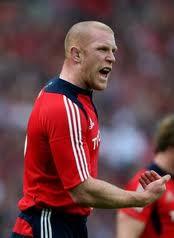

Munster V Blues (Sat)
MAGNERS LEAGUE
Venue: Thomond Park, Limerick Date: Saturday, 4 December Kick-off: 1930
GMT Coverage: Score updates on BBC Sport website
Paul O'Connell could make his return to Munster duty for the first time in almost nine months in Saturday's Magners League clash against the Blues.
O'Connell played his first match since Ireland's defeat by Scotland in March when he lined out for Young Munster in the All-Ireland League last weekend.
The Blues will be without forwards Martyn Williams and John Yapp who are on Barbarians duty.
In their absence Gethin Jenkins and Sam Warburton are
on Blue standby. |
 |
Paul O Connell has been out of
Action since last March |
Paul O'Connell has been out of action since last March
O'Connell, the 2009 Lions captain, has been out of action since last Spring because of a groin injury.
John Hayes is in line to start for Munster at Thomond Park.
Hayes has been released from the Barbarians squad for Saturday's game against South Africa.
O'Connell played all the second half for Young Munster against Shannon on Friday evening.
Munster saw their lead at the top of the table reduced to one point as they were defeated 20-6 by the Dragons at the weekend while the Blues moved up to third by beating Glasgow 38-6.
|